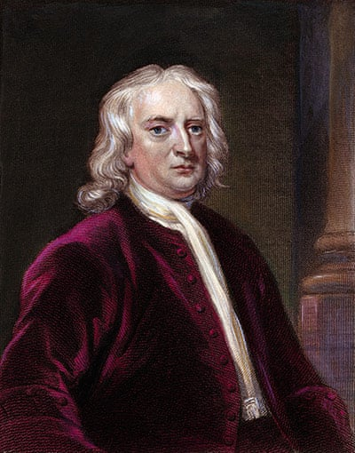
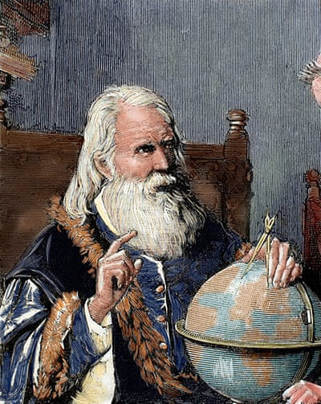
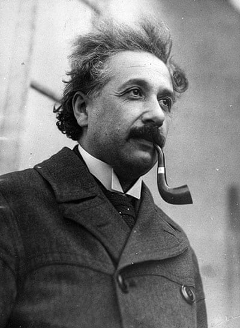
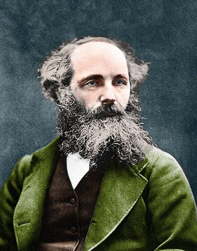
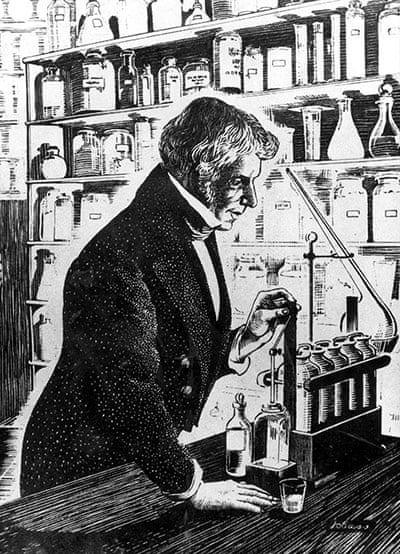
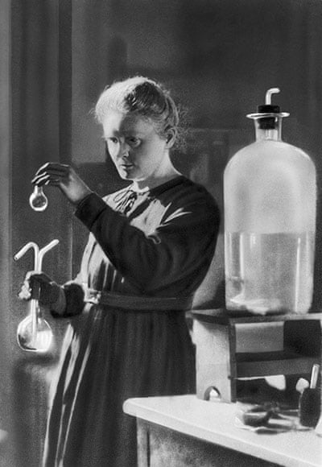
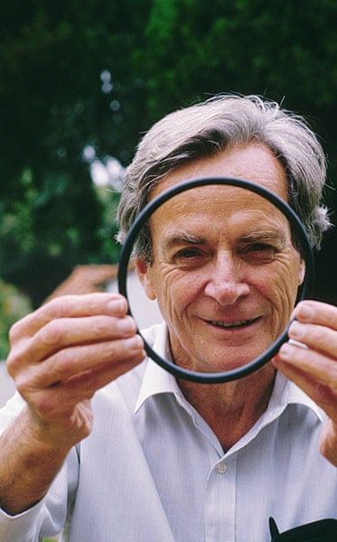
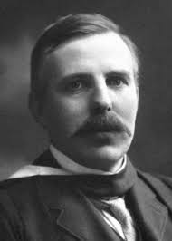
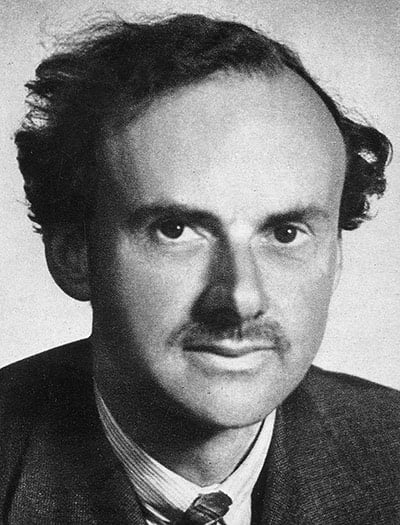

Isaac Newton
Co-inventor of calculus, a major contributor to the science of optics and a gifted mathematician, Isaac Newton (1643-1727), who was born in Lincolnshire, outlined the laws of mechanics that now underpin vast swaths of classical physics. Most important of all, Newton outlined the principle of gravity, which explained how the planets revolve round the sun. During his life, he was showered with honours, including the presidency of the Royal Society. He is renowned as a supreme rationalist, though he actually wrote more about alchemy and religion, including a 300,000-word treatise that attempted to prove the pope was really the Antichrist and an “apocalyptic whore”.
Niels Bohr
Co-inventor of calculus, a major contributor to the science of optics and a gifted mathematician, Isaac Newton (1643-1727), who was born in Lincolnshire, outlined the laws of mechanics that now underpin vast swaths of classical physics. Most important of all, Newton outlined the principle of gravity, which explained how the planets revolve round the sun. During his life, he was showered with honours, including the presidency of the Royal Society. He is renowned as a supreme rationalist, though he actually wrote more about alchemy and religion, including a 300,000-word treatise that attempted to prove the pope was really the Antichrist and an “apocalyptic whore”.

Galileo Galilei
Born in Pisa, Galileo (1564-1642) initially trained as a doctor. On hearing of the invention of the telescope in 1609, he built his own and turned it to the heavens, revealing the existence of sunspots and a pitted, mountainous surface on the moon: the heavens were not incorruptible. His studies also provided support for the idea that the Earth revolves round the sun. This got Galileo into considerable trouble with the Catholic church and he was forced to abandon that backing in 1633. His work on falling bodies also laid the groundwork for Newton’s subsequent theories.
Albert Einstein
Three great theories define our physical knowledge of the universe: relativity, quantum mechanics and gravitation. The first is the handiwork of German-born Albert Einstein (1879-1955), who remains the physicist with the greatest reputation for originality of thought. His work showed that space and time are not immutable but are fluid and malleable. Einstein, who took US citizenship in 1940, also provided the world with its most famous equation, E=mc2, which demonstrates the equivalence of mass and energy. His name has become synonymous with the idea of genius and he died a celebrity. He was awarded the 1921 Nobel prize for physics.
James Clerk Maxwell
In contrast to Newton and Einstein, Edinburgh-born Maxwell (1831-79) is virtually unknown to the general public. Yet his contribution to physics was every bit as significant, particularly his discovery of the theory of electromagnetism. This showed that electricity, magnetism and light are all manifestations of the same phenomenon, the electromagnetic field. The development of radio, TV and radar were the direct consequences. Maxwell also carried out pioneering work in optics and colour vision. However, in his later years, his God-fearing Scottish upbringing brought him into dispute with the evolutionary thinking of Darwin and others and he wrote papers denouncing natural selection.
Michael Faraday
Largely self-educated, Faraday (1791-1867) became one of the greatest scientists of his day thanks to the patronage of the eminent English chemist Humphry Davy, who hired him as an assistant in 1813. Faraday went on to establish the idea of the electromagnetic field and discovered electromagnetic induction and the laws of electrolysis. His electromagnetic devices formed the foundation of electric motor technology. He twice rejected offers of a knighthood and when asked to advise on chemical weapons for the Crimean war effort, refused on ethical grounds. Einstein kept a picture of Faraday on his study wall (alongside pictures of Newton and Maxwell).
Marie Curie
The first woman to win a Nobel and the first person to win two separate Nobels, Curie (1867-1934) was born in Poland and won her first Nobel in 1903 with husband, Pierre, for discovering radioactivity. However, she was not allowed to participate in the keynote lecture winners give because she was a woman. After Pierre died in a road accident in 1906, she won her second Nobel in 1911 for discovering radium, though an attempt was made to rescind it when news emerged of her affair with married colleague Paul Langevin. After collecting the prize, Curie was pilloried by the French press. Langevin was ignored.
Richard Feynman
One of the 20th century’s most influential and colourful physicists, Feynman (1918-88) played a key role in the development of quantum electrodynamics, the theory that describes how light and matter interact, earning him a Nobel prize in 1965. Feynman also contributed to the fields of quantum computing and nanotechnology and was a member of the Rogers Commission that lambasted Nasa over the destruction of space shuttle Challenger in 1986. He was a keen drummer, experimented with drugs and often worked on physics problems in topless bars because he said they helped him concentrate. Feynman died in 1988, aged 69.
Ernest Rutherford
New Zealand-born Rutherford (1871-1937) is considered one of the greatest of all experimental physicists. He discovered the idea of radioactive half-life and showed that radioactivity involved the transmutation of one chemical element to another. He was awarded a Nobel in 1908 “for his investigations into the disintegration of the elements”. Rutherford later became director of the Cavendish Laboratory at Cambridge University where, under his leadership, the neutron was discovered by James Chadwick in 1932 and the first experiment to split the nucleus was carried out by John Cockcroft and Ernest Walton. The element rutherfordium was named after him in 1997.
Paul Dirac
One of the most revered – and strangest – figures in physics. The son of a Swiss father and English mother, Dirac (1902-84) was born in Bristol. He predicted the existence of antimatter, created some of quantum mechanics’ key equations and laid the foundations for today’s micro-electronics industry. Dirac won a Nobel in 1933 but remained “an Edwardian geek”, according to biographer Graham Farmelo. He turned down a knighthood because he didn’t want people using his first name, while his daughter, Monica, never once remembered him laughing. “This balancing on the dizzying path between genius and madness is awful,” Einstein said of him.
